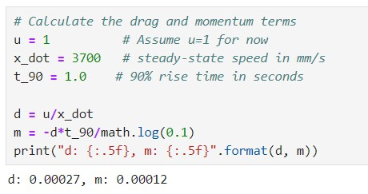
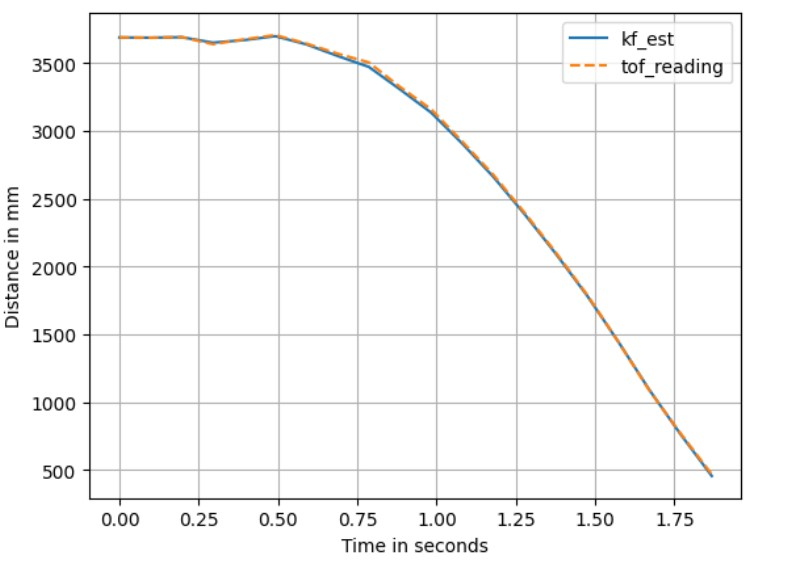

Objective
The aim of this lab is to implement a Kalman Filter, combining the measurement and the prediction to achieve better estimates of the robot's position even when the distance measurement of the ToF sensor is not yet available.
Lab Tasks
Estimate Drag and Momentum
Estimating the drag and momentum terms is crucial for constructing the state space model of the system. In a common
scenario where the robot is driven towards a wall, the distance to the wall is represented by x, and the system's
control input is represented by u. The drag (d) and momentum (m) terms within the state space
equation, along with the formulas derived for these terms, are illustrated in the figure below, sourced from class slides.
According to the formulas in the figure above, to estimate the values of d and m, a step response
u(t) is needed as the PWM value for the motor input, driving the robot to the wall. The u(t) is set as
shown in the figure below, with a step size of 180, to maintain similar dynamics as the PID controller output range was
limited to 255 in previous labs.

The results are shown in the figure below, where the ToF distance readings are displayed along with the calculated robot
speeds, both plotted on the same graph. The units on the y-axis correspond to mm for distance and mm/s for
speed. To ensure that the distance information appears smooth and not as step-like, the ToF reading is logged in the
data array along with the corresponding timestamp only when there is a new reading from the ToF sensor that differs from
the previous one.
As the plots imply, the robot reaches a steady-state speed of approximately 3700mm/s at around 1.5 seconds. The
speed starts to rise, and then reaches 90% of its steady-state value at approximately 0.5s and 1.5s, respectively,
indicating a 90% rise time of approximately 1.0s. Substituting these values into the equations, the following estimates
for d and m are obtained:

Initialize the Kalman Filter
The workflow of the Kalman Filter, as shown in the figure from the lecture slides, aims to compute the state estimate
μ(t). The control input u(t) and measurement z(t) data are obtained from the robot system. To
complete the algorithm, the matrices A, B, and C are required, and the noise matrices Σu and Σz need to be
specified.
With the drag and momentum terms found above, the A and B matrices of the state space equation are calculated
and then discretized as shwon below. Note that the sampling interval is set to 0.098s, as it is the average time interval
between the timestamps in this test, with the ToF sensor being set to long-distance mode.

The C matrix should be C = [-1, 0], as the robot drives towards the wall, which means the negative distance from the wall is measured.
The final step is to specify the process noise and sensor noise covariance matrices, which require a total of three
covariance values. These values can be determined using the formula provided in the lecture slides, as shown below.
For the process noise, the two covariance values are directly related to the sampling time and represent the process
noise regarding the robot's position and speed, respectively. As for the measurement noise, also called sensor noise,
the covariance value is set to 20mm, indicating that for each ToF sensor measurement, there is a likely error of less
than 20mm. The noise matrices are calculated as follows:
Implement and Test the Kalman Filter (Python)
The function of the Kalman Filter is declared as follows:
To validate the Kalman Filter parameters, an implementation was carried out in Jupyter using the PID control data from a
straight run towards the wall. Some initial states are necessary to be specified, as shown in the figure below. The PWM
values are converted into the input u, scaled in the range [0, 1] by dividing the step size of 180. The initial
position of the robot and the starting speed are encapsulated in the x vector; the sig matrix denotes
the initial state uncertainty, and these two variables will be updated in each iteration of the Kalman filter. Then, the
Kalman Filter was called, and the estimate state results were stored.
With the above assigned parameters (σ1, σ2 = 1020.40816327 decided by the sample interval and σ3 = 20),
running the Kalman filter shows estimation results that fit well with the ToF readings, as shown below.

Setting σ3 to 0 results in the Kalman Filter output shown in the figure below. This change indicates that the
sensor measurement has no uncertainty at all, causing the Kalman Filter's estimate to align completely with the sensor
readings as expected.
Setting σ3 back to 20 but arbitrarily changing σ1 and σ2 to 1 results in the output shown in the
figure below. Since σ1 and σ2 are inversely proportional to the sample interval, if the sample rate is
higher, these values will be smaller. In such cases, the system model is more reliable than the measurement, and the
Kalman Filter's estimation should be used instead of the ToF readings.
Estimating the Distance with Kalman Filter
In applications, the Kalman Filter can be used to predict the state of the robot when new readings from the ToF sensor
are not yet available, as a substitution of the extrapolation method used in Lab 6. To achieve this, as shown in the figure below,
two new timestamps were interpolated between each pair of recorded data points.
On the other hand, the implementation of the Kalman Filter function was slightly modified as shown in the figure below,
to additionally accept a flag. When the ToF sensor reads a new value with a timestamp, this flag is raised, and the
Kalman Filter performs both prediction and update steps. When there is no new measurement, the Kalman Filter only
performs the prediction step to estimate the state of the robot.
The data processing approach described above demonstrates how the Kalman Filter estimates the state of the robot by
"running faster" than the ToF sensor. The results are shown below, which is pretty accurate, especially when the robot
starts moving.
Discussion & Conclusion
In this lab, I learned about the Kalman Filter and its application in robotics. After a mathematical model is created for a system, the Kalman Filter can serve as a valuable tool for applying control theory to approximate the behavior of the real system. Compared to open-loop estimations such as extrapolation, measurements derived from this kind of parameter-tuned models are generally more precise.